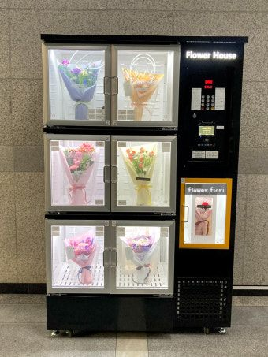

인천 무인자판기 설치 완료 — 부평·구월 도심 상권 무인 판매 구축

오늘은 인천 부평, 지하철역과 시장이 가까운 상가 건물에 무인자판기를 설치하고 왔습니다. 출퇴근 유동에 시장 손님까지 겹쳐 하루 종일 사람이 도는 자리였습니다. 콘센트 위치와 바닥 수평을 잡고 결제 통신을 확인한 뒤 마무리했습니다.
설치 위치 — 상가 1층 계단 옆. 도심 상권은 사람 동선의 폭이 중요합니다. 지나가는 길목이어도 폭이 좁아 멈춰 설 공간이 없으면 안 팔립니다. 한 걸음 물러서서 설 수 있는 자리를 골랐습니다.
인천에 설치한 자판기 구성
무인자판기에 음료자판기·커피자판기·스낵 자판기를 담고, 여름 수요를 위해 냉동자판기와 심야용 라면자판기를 더한 멀티자판기 구성입니다. 숙박·유흥 상권이 가까워 주류자판기(성인인증 방식)도 함께 검토했습니다. 카드·삼성페이·카카오페이·네이버페이·QR을 모두 받고, 매출·재고는 앱에서 원격으로 확인합니다.
인천 무인자판기 장점과 단점
장점 — ① 역세권이라 24시간 매출이 고르게 납니다 ② 인건비 0원 소자본 무인사업 ③ 상가 자투리 공간이면 충분 ④ 카드결제라 현금 관리 불필요.
단점도 솔직히 — 도심 역세권은 임대료와 경쟁이 변수입니다. 편의점이 바로 옆이면 일반 음료는 밀립니다. 그래서 편의점에 없는 품목이나 심야 시간대를 노려야 합니다. 안 될 자리는 먼저 말씀드립니다.
인천 무인자판기 매출 전략
역세권은 출퇴근 두 번의 피크가 확실합니다. 아침엔 캔커피·생수, 저녁엔 간식·아이스크림 회전이 좋습니다. ① 동선 위에 놓고 ② 시간대별 품목에 슬롯을 나누고 ③ 편의점과 겹치지 않는 품목으로 차별화하는 게 핵심입니다.
인천, 이런 곳에 무인자판기가 잘 됩니다
인천은 도심·항만·공단이 섞여 있어 호텔·모텔·사우나·찜질방, 애견셀프목욕 매장, 학교자판기(대학·고등학교), 구청무인자판기(부평구청·주민센터), 인천1호선·경인선 지하철역자판기까지 문의가 많습니다. 사람이 머무는 시간이 긴 자리일수록 음료·라면·주류 자판기 회전이 빠릅니다.
인천 무인키오스크·업종별 무인매장
무인키오스크 문의도 많습니다. 골프존·스크린골프장 무인 접수, 병원·의원 무인 수납, 무인정육점·무인마카롱·무인밀키트 매장 셀프주문까지, 좁은 매장용 미니키오스크부터 매장 크기에 맞춰 세팅합니다.
인천 서비스 지역 (동 단위 방문)
부평동, 구월동, 주안동, 송도동, 청라동, 계산동까지 인천 전역을 동 단위로 방문합니다.
부평동 무인자판기 설치 · 구월동 무인자판기 설치 · 주안동 무인자판기 설치 등
인천 무인사업, 이렇게 시작하세요
설치비는 무료입니다. 입지·품목 분석부터 기계 반입, 카드 결제 연동, 재고 운영까지 한 번에 도와드립니다. 도심 상가의 자투리 공간으로 부수입을 만들고 싶으시면 편하게 물어보세요.
함께 많이 찾는 키워드 — 인천 음료자판기 · 인천 커피자판기 · 인천 멀티자판기 · 인천 무인키오스크 · 인천 무인정육점 등
📞 인천 무인자판기 설치 상담 010-6832-1994